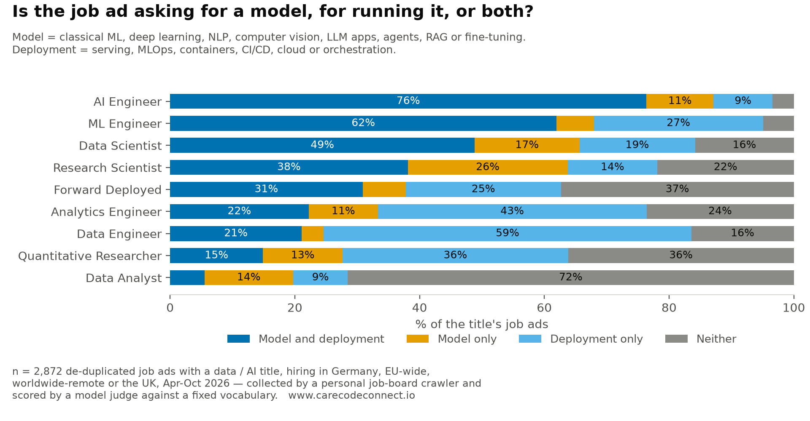
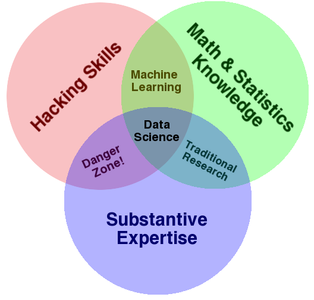
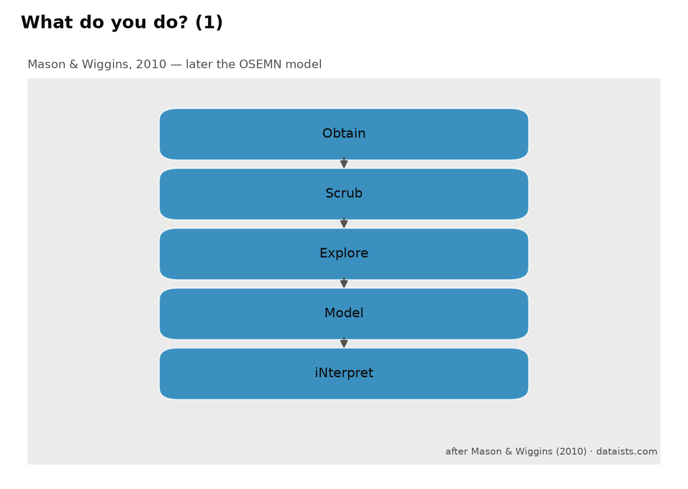
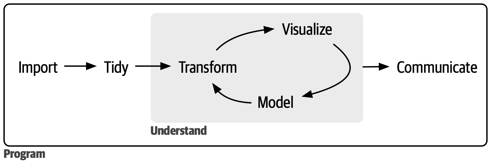
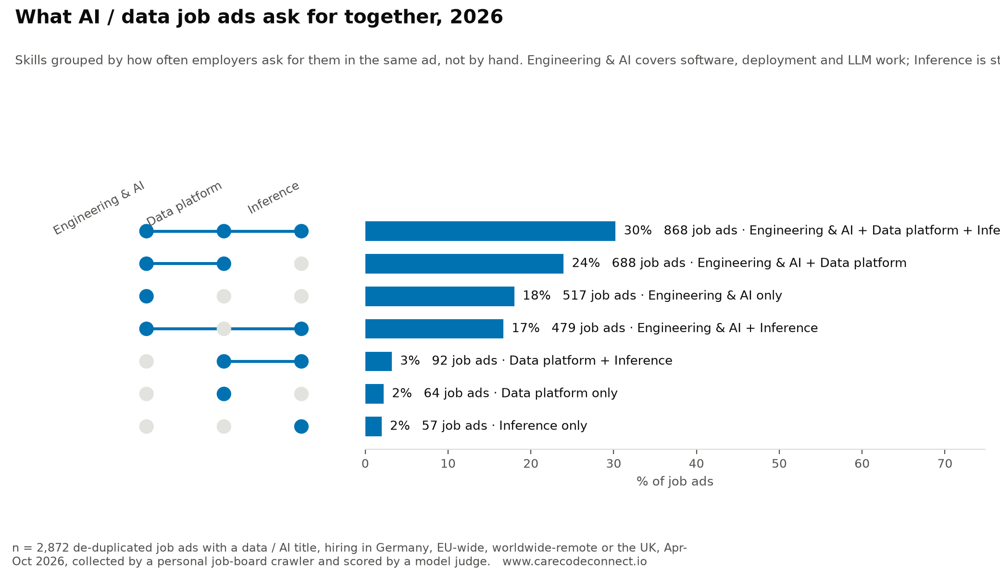
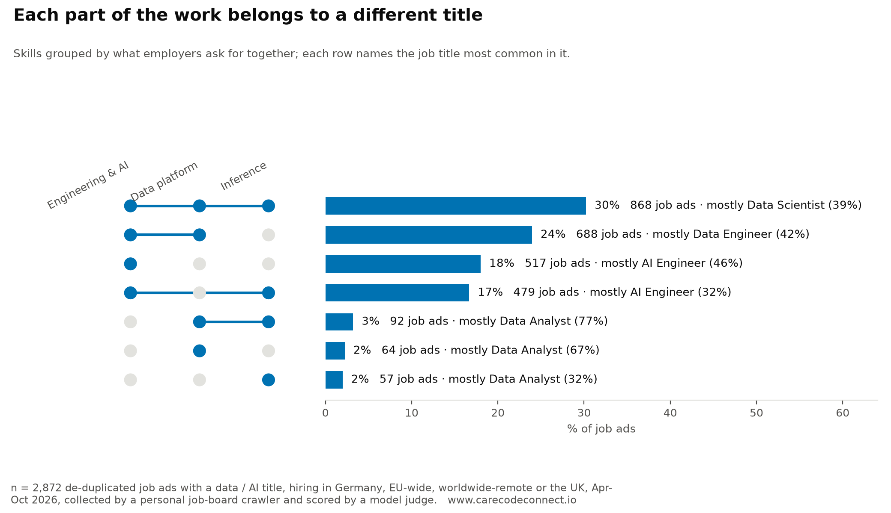

%%{init: {"theme": "neutral", "fontSize": 15, "flowchart": {"curve": "basis", "nodeSpacing": 38, "rankSpacing": 55}}}%%
flowchart TB
QR["Quantitative Researcher<br/>n = 47"]
DS["Data Scientist<br/>n = 518"]
DA["Data Analyst<br/>n = 309"]
AE["Analytics Engineer<br/>n = 72"]
DE["Data Engineer<br/>n = 341"]
ML["ML Engineer<br/>n = 284"]
RS["Research Scientist<br/>n = 160"]
AI["AI Engineer<br/>n = 707"]
FD["Forward Deployed<br/>n = 434"]
QR ---|"1.41<br/>statistics, forecasting"| DS
DA ---|"1.29<br/>SQL, BI ↔ Python, classical ML"| DS
AE ---|"1.44<br/>dbt, pipelines ↔ BI, product analytics"| DA
DE ---|"0.96<br/>cloud, Spark ↔ SQL, dbt"| AE
DS ---|"1.10<br/>+ MLOps, serving, containers"| ML
RS -. "0.99<br/>research, experimentation ↔<br/>MLOps, serving, CI/CD" .- ML
ML ---|"1.10<br/>+ LLM apps, agents, NLP"| AI
DS -. "1.47 direct" .- AI
AI -. "1.39<br/>LLM apps, NLP ↔<br/>customer-facing, stakeholders" .- FD
classDef inf fill:#dbe8f8,stroke:#0072B2,color:#0b0b0b;
classDef eng fill:#fde3d8,stroke:#D55E00,color:#0b0b0b;
classDef data fill:#e4dde9,stroke:#882255,color:#0b0b0b;
classDef hinge fill:#0072B2,stroke:#0072B2,color:#ffffff;
class QR,DA,DS inf;
class AI,FD,RS eng;
class AE,DE data;
class ML hinge;
AI / Data Job Skills
Across ~3,000 job ads European employers posted in 2026, AI and data work has spread beyond the Data Scientist title: nine titles divide the skills between them, and a data scientist ad now asks for deployment as well as a model.
Executive summary
AI and data work has spread beyond the Data Scientist title. 2,872 job ads for 9 data and AI titles, hiring in Germany, EU-wide, worldwide-remote or the UK, 2026-04 to 2026-10. A model judge read each in full and answered the same 44 questions of every one — does this ad require this skill.

| Answer | |
|---|---|
| RQ1 · Do Conway’s 2010 circles still fit? | No. 28% of ads sit in his “danger zone”; 51% need a skill none of his circles covers; 67% need deployment, which none of them contains. |
| RQ2 · Which skills are asked for together? | Three groups. Engineering, deployment & AI (89% of ads), data platform (60%), statistics & inference (52%) — plus communication at 79%, required everywhere. |
| RQ3 · How do the titles divide that work? | One title per region. The centre is 30% of ads and 61% of it is not Data Scientist. “AI Engineer” is the most advertised title at 25%. |
Three results behind those answers: a Data Scientist ad asks for the model and for running it (49% need both); stakeholder communication is the most-required skill at 71%, ahead of Python at 57%; statistics is what separates the two headline titles, 73% against 11%.
RQ1 · The 2010 circles no longer fit
Conway’s 2010 diagram put data science where hacking skills, maths and statistics, and substantive expertise meet. Sized by how many of these ads land in each region:

28% of ads want code and domain engagement but no statistics — the region he marked “danger zone” and thought nearly empty. 7 tracked skills fit none of his circles at all, and 51% of ads require at least one.
What is missing from his picture is deployment. His three circles are knowledge — code, maths, domain. 67% of ads require a production skill, and model serving alone appears in 60% of Data Scientist ads, more than any single modelling skill.
NoteThe field’s own definitions, and how they were tested
Three pictures the field has used. Only Conway’s can be tested against a job ad: it says what a data scientist must know, and knowledge is what ads ask for. The other two describe a process, and no ad says “must be able to scrub”.



An ad joins a circle if it requires at least one skill mapped to it. Only the measured figures and the 2026 circles are this page’s own.
RQ2 · Three groups of skills, and one asked for everywhere
The 44 skills were clustered by how often employers ask for them in the same ad. Four groups fall out — three that divide the market, one required almost everywhere.

- Engineering, deployment & AI — 20 skills, 89% of ads. Shipping software and building on LLMs fall in one group.
- Data platform — 9 skills, 60%.
- Statistics & inference — 12 skills, 52%. Classical ML, deep learning and computer vision cluster here, not with LLM work.
- Communication — 3 skills, 79%, in every region. The ground, not a circle.
NoteWhat is in each group, and the demand ranking
Most required in each: engineering, deployment & AI — Software engineering, Python, Model serving, Agents, LLM applications, NLP. Data platform — Pipelines / ETL, SQL, Data governance, Data warehouse, Spark / distributed, BI dashboards. Statistics & inference — Statistics, Product analytics, A/B experimentation, Classical ML, Deep learning, Forecasting. Communication — Stakeholder communication, Mentoring / leadership, Customer-facing.

stakeholder communication leads at 71%, then software engineering (69%) and Python (57%). The tail is the specialist end: Scala / Java 4%, streaming 4%, R 3%, time series 3%, quant finance research 2%.
RQ3 · Each region belongs to a different title

The centre — ads needing all three groups — is 30% of the market, and 61% of it carries a title other than Data Scientist. Data-platform work belongs to Data Engineers, engineering without inference to AI Engineers, data-and-inference without engineering to Data Analysts (77% of that region).
A Data Scientist ad asks for the model and for running it. 49% require both modelling and deployment, and of those requiring modelling, 74% require deployment too. The ad wanting a model but not its deployment is 17%.
Statistics separates the two headline titles: 73% of Data Scientist ads against 11% of AI Engineer ads. On full requirement profiles they are 1.47 apart — further than Data Scientist is from Data Analyst (1.29) — with ML Engineer the shortest link between them (1.10 and 1.10).
NoteThe titles by distance, the shared core, and the map
Each title’s profile is the share of its ads requiring each skill; an edge is the Euclidean distance between two profiles.
Data Engineer and Analytics Engineer are the closest pair at 0.96, reaching the rest of the market only through Data Analyst. Data Scientist, AI Engineer and ML Engineer share 5 required skills — Python, mentoring / leadership, model serving, software engineering, stakeholder communication — and beyond those, Data Scientist and AI Engineer have nothing in common.


“AI Engineer” is the most advertised title at 25%, then Data Scientist (18%) and Data Engineer (12%); Analytics Engineer (3%) and Quantitative Researcher (2%) are the rarest.

By skill area, statistics and experimentation is the widest split (75% against 15%) and GenAI / LLM engineering its mirror (47% against 87%); machine learning itself is nearly even (71% against 75%).
Where AI Engineer comes from: its nearest neighbour is ML Engineer (1.10), and Data Engineer is 1.92 away — further than Data Scientist. One skill crosses the divide: model evaluation is required in 43% of AI Engineer ads and 24% of Data Scientist ads, against 2% of Data Engineer ads. Within the 991 engineering ads, evals run at 42% overall but 75% where A/B experimentation is also required (odds ratio 5.0, p <0.001). LLM observability shows no such link (odds ratio 0.8, p 0.55).
Each dot is one ad, placed by the 44 skills it requires (t-SNE: nearby dots have similar requirements, and distances across the map carry no scale). Click a title in the legend to hide it.
NoteEach of the 9 titles, one at a time
Nine titles, in the approximate order each entered data and AI hiring. The dates are background — this sample runs 2026-04 to 2026-10 and can say nothing about when a title appeared — but everything after them is measured from the ads.
Across the whole sample, 30% of ads require building or training a model of some kind and 42% require calling a model someone else trained. That split is the thread running through these sections, and it moves with the chronology: the older the title, the likelier it is to build.

%%{init: {"theme": "neutral", "fontSize": 17, "flowchart": {"curve": "basis", "nodeSpacing": 26, "rankSpacing": 34}}}%%
flowchart TB
subgraph r0[" "]
direction LR
n0["Quantitative<br/>Researcher<br/>1980s–90s<br/>2% of ads"]
n1["Data<br/>Analyst<br/>1990s–2000s<br/>11% of ads"]
n0 --> n1
end
subgraph r1[" "]
direction LR
n2["Research<br/>Scientist<br/>~2012 in this form<br/>6% of ads"]
n3["Data<br/>Scientist<br/>2008<br/>18% of ads"]
n2 --> n3
end
subgraph r2[" "]
direction LR
n4["Data<br/>Engineer<br/>~2011–14<br/>12% of ads"]
n5["ML<br/>Engineer<br/>~2015–16<br/>10% of ads"]
n4 --> n5
end
subgraph r3[" "]
direction LR
n6["Analytics<br/>Engineer<br/>~2018–19<br/>3% of ads"]
n7["Forward<br/>Deployed<br/>~2023<br/>15% of ads"]
n6 --> n7
end
subgraph r4[" "]
direction LR
n8["AI<br/>Engineer<br/>~2023<br/>25% of ads"]
end
r0 --> r1
r1 --> r2
r2 --> r3
r3 --> r4
classDef row fill:none,stroke:none;
class r0,r1,r2,r3,r4 row;
1. Quantitative Researcher — finance, 1980s–1990s
47 ads, 2% of the sample
The oldest title here, and the one that got there first. Investment banks and hedge funds were hiring mathematicians and physicists to price derivatives and find trading signals two decades before anyone said “data scientist”. Everything the later titles claim as novel — statistics on large datasets, models in production, money riding on the output — was already the job.

Take-home. 15% of these ads want both a model and its deployment and 13% a model without it; the most distinctive requirement is quantitative research, and the nearest title is Data Scientist.
Nearest neighbour. Data Scientist (1.41 apart on the skills map), then Research Scientist (1.51). Furthest: Analytics Engineer (2.41).
Build or call. 26% build or train a model, 9% call one over an API, and 2% want the API work with no model-building at all.
In the ads’ own words. The phrases most over-represented in this title, read out of the ads by a second model that was never shown our skill list, with the share of the title’s ads using each: “portfolio construction” (9%), “high-frequency trading” (6%), “derivatives pricing” (6%), “large dataset analysis” (11%), “quantitative modeling” (9%).
5+ years of experience with quantitative modeling and pricing
— one of 4 Quantitative Researcher job ads (9% of the title) that ask for “quantitative modeling”
Strong understanding of market mechanics and microstructure invariants
— one of 4 Quantitative Researcher job ads (9% of the title) that ask for “market microstructure”
2. Data Analyst — business intelligence, 1990s–2000s
309 ads, 11% of the sample
Grew out of business intelligence and reporting. The job was to turn a company’s own operational data into numbers a manager could act on, and the tooling was the warehouse and the dashboard rather than the notebook.

Take-home. 6% of these ads want both a model and its deployment and 14% a model without it; the most distinctive requirement is BI dashboards, and the nearest title is Data Scientist.
Nearest neighbour. Data Scientist (1.29 apart on the skills map), then Analytics Engineer (1.44). Furthest: AI Engineer (2.11).
Build or call. 8% build or train a model, 16% call one over an API, and 14% want the API work with no model-building at all.
In the ads’ own words. The phrases most over-represented in this title, read out of the ads by a second model that was never shown our skill list, with the share of the title’s ads using each: “dashboard design” (8%), “excel” (19%), “tableau” (28%), “power bi” (32%), “business intelligence” (6%).
data visualisation tools such as Power BI
— one of 100 Data Analyst job ads (32% of the title) that ask for “power bi”
A/B testing that directly influence product improvements
— one of 49 Data Analyst job ads (16% of the title) that ask for “a/b testing”
3. Research Scientist — industrial labs, long-standing; current AI form from ~2012
160 ads, 6% of the sample
The title is far older than data science — industrial research labs have used it for most of a century — but the version that shows up in this sample is the deep-learning lab role that followed the 2012 ImageNet result: publish, train large models, push the state of the art.

Take-home. 38% of these ads want both a model and its deployment and 26% a model without it; the most distinctive requirement is research, and the nearest title is ML Engineer.
Nearest neighbour. ML Engineer (0.99 apart on the skills map), then Data Scientist (1.19). Furthest: Analytics Engineer (2.07).
Build or call. 59% build or train a model, 29% call one over an API, and 8% want the API work with no model-building at all.
In the ads’ own words. The phrases most over-represented in this title, read out of the ads by a second model that was never shown our skill list, with the share of the title’s ads using each: “chemistry” (5%), “jax” (14%), “sglang” (6%), “reinforcement learning” (18%), “experimental design” (11%).
Strong empirical research skills in Reinforcement Learning
— one of 29 Research Scientist job ads (18% of the title) that ask for “reinforcement learning”
state-of-the-art Deep Learning and Reinforcement Learning models
— one of 27 Research Scientist job ads (17% of the title) that ask for “deep learning”
4. Data Scientist — coined 2008, mainstream from ~2012
518 ads, 18% of the sample
Coined in 2008 by D.J. Patil and Jeff Hammerbacher, then leading data at LinkedIn and Facebook, and made famous by the 2012 Harvard Business Review piece. The pitch was a hybrid: enough statistics to be rigorous, enough code to be self-sufficient, enough business sense to be listened to.

Take-home. 49% of these ads want both a model and its deployment and 17% a model without it; the most distinctive requirement is classical ML, and the nearest title is ML Engineer.
Nearest neighbour. ML Engineer (1.10 apart on the skills map), then Research Scientist (1.19). Furthest: Analytics Engineer (1.81).
Build or call. 55% build or train a model, 35% call one over an API, and 12% want the API work with no model-building at all.
In the ads’ own words. The phrases most over-represented in this title, read out of the ads by a second model that was never shown our skill list, with the share of the title’s ads using each: “regression” (6%), “statistical modeling” (9%), “data science” (28%), “clustering” (6%), “causal inference” (14%).
experimental design, causal inference and quasi-experimental methods
— one of 73 Data Scientist job ads (14% of the title) that ask for “causal inference”
Expertise in machine learning and predictive modelling
— one of 41 Data Scientist job ads (8% of the title) that ask for “predictive modeling”
5. Data Engineer — ~2011–2014
341 ads, 12% of the sample
Split off from the data scientist once companies discovered that most of the work was moving and shaping data rather than modelling it. Hadoop, then Spark, then the cloud warehouse made the pipeline a full-time job.

Take-home. 21% of these ads want both a model and its deployment and 4% a model without it; the most distinctive requirement is orchestration, and the nearest title is Analytics Engineer.
Nearest neighbour. Analytics Engineer (0.96 apart on the skills map), then Data Analyst (1.65). Furthest: Quantitative Researcher (2.24).
Build or call. 4% build or train a model, 23% call one over an API, and 22% want the API work with no model-building at all.
In the ads’ own words. The phrases most over-represented in this title, read out of the ads by a second model that was never shown our skill list, with the share of the title’s ads using each: “apache iceberg” (5%), “azure data factory” (7%), “apache airflow” (7%), “data security” (8%), “etl/elt” (8%).
Own the design of scalable ETL/ELT pipelines
— one of 28 Data Engineer job ads (8% of the title) that ask for “etl/elt”
6. ML Engineer — ~2015–2016
284 ads, 10% of the sample
Split off from the other side of the data scientist: the half concerned with getting a trained model to run reliably for real users. The title tracks the arrival of model serving, feature stores and the tooling that became MLOps.

Take-home. 62% of these ads want both a model and its deployment and 6% a model without it; the most distinctive requirement is deep learning, and the nearest title is Research Scientist.
Nearest neighbour. Research Scientist (0.99 apart on the skills map), then AI Engineer (1.10). Furthest: Analytics Engineer (2.00).
Build or call. 63% build or train a model, 35% call one over an API, and 8% want the API work with no model-building at all.
In the ads’ own words. The phrases most over-represented in this title, read out of the ads by a second model that was never shown our skill list, with the share of the title’s ads using each: “kubeflow” (7%), “model serving” (14%), “tensorrt” (5%), “quantization” (5%), “recommendation systems” (7%).
training and iterating on deep learning models
— one of 26 ML Engineer job ads (9% of the title) that ask for “model training”
transition of machine learning models into production
— one of 49 ML Engineer job ads (17% of the title) that ask for “model deployment”
7. Analytics Engineer — ~2018–2019
72 ads, 3% of the sample
The newest of the analytics titles, and essentially a dbt-era invention: apply software engineering practice — version control, tests, modular transformations — to the modelling layer between the warehouse and the dashboard.

Take-home. 22% of these ads want both a model and its deployment and 11% a model without it; the most distinctive requirement is dbt modelling, and the nearest title is Data Engineer.
Nearest neighbour. Data Engineer (0.96 apart on the skills map), then Data Analyst (1.44). Furthest: Quantitative Researcher (2.41).
Build or call. 0% build or train a model, 33% call one over an API, and 33% want the API work with no model-building at all.
In the ads’ own words. The phrases most over-represented in this title, read out of the ads by a second model that was never shown our skill list, with the share of the title’s ads using each: “lightdash” (6%), “semantic layer” (7%), “analytics engineering” (25%), “dimensional modeling” (15%), “data quality testing” (6%).
modeled in dbt and orchestrated by Airflow
— one of 48 Analytics Engineer job ads (67% of the title) that ask for “dbt”
8. Forward Deployed — Palantir-era term, mainstream from ~2023
434 ads, 15% of the sample
A solutions-engineering lineage with a newer name. The engineer is embedded with the customer, building and adapting the product in front of them. The term escaped Palantir and spread as AI vendors discovered their product needed fitting to each buyer.

Take-home. 31% of these ads want both a model and its deployment and 7% a model without it; the most distinctive requirement is customer-facing work, and the nearest title is Research Scientist.
Nearest neighbour. Research Scientist (1.35 apart on the skills map), then AI Engineer (1.39). Furthest: Analytics Engineer (1.95).
Build or call. 6% build or train a model, 37% call one over an API, and 33% want the API work with no model-building at all.
In the ads’ own words. The phrases most over-represented in this title, read out of the ads by a second model that was never shown our skill list, with the share of the title’s ads using each: “solutions engineering” (12%), “solution architecture” (8%), “customer communication” (7%), “presentation skills” (5%), “troubleshooting” (6%).
8+ years experience in Solution Engineering role
— one of 53 Forward Deployed job ads (12% of the title) that ask for “solutions engineering”
9. AI Engineer — ~2023
707 ads, 25% of the sample
The newest title in the sample and already the largest. It arrived with the production LLM stack — applications, retrieval, agents, evaluation — and it is the one title here defined by what it builds with rather than what it knows.

Take-home. 76% of these ads want both a model and its deployment and 11% a model without it; the most distinctive requirement is RAG, and the nearest title is ML Engineer.
Nearest neighbour. ML Engineer (1.10 apart on the skills map), then Forward Deployed (1.39). Furthest: Quantitative Researcher (2.16).
Build or call. 31% build or train a model, 81% call one over an API, and 55% want the API work with no model-building at all.
In the ads’ own words. The phrases most over-represented in this title, read out of the ads by a second model that was never shown our skill list, with the share of the title’s ads using each: “langgraph” (14%), “tool use” (7%), “llm apis” (5%), “vector search” (5%), “prompt engineering” (23%).
using large language models, RAG, vector search
— one of 164 AI Engineer job ads (23% of the title) that ask for “rag”
AI application patterns (RAG, agents, tool use)
— one of 13 AI Engineer job ads (2% of the title) that ask for “agents”
Exposure to fine-tuning or continuous learning techniques
— one of 39 AI Engineer job ads (6% of the title) that ask for “fine-tuning”
Conclusions
The question was whether “AI Engineer” is simply the new name for “Data Scientist”. It is not. The two titles are 1.47 apart on what they require — further apart than Data Scientist and Data Analyst — and what separates them is statistics, required in 73% of Data Scientist job ads and 11% of AI Engineer ones.
The wider answer is that AI and data work has stopped being one job. Employers ask for skills in three recognisable bundles — building and running software including LLM work, the data platform underneath it, and statistics and inference — and each combination of those bundles is advertised under a different title. The combination that needs all three is 30% of the market, and 61% of it is advertised as something other than Data Scientist.
What has changed since the field’s own 2010 definition is not the modelling. It is that the ad now expects the model to run in production: 49% of Data Scientist job ads ask for both, and among those that ask for a model at all, 74% also ask for its deployment. Conway’s three circles are knowledge — code, maths, domain — and none of them is shipping and running the result.
What this can and cannot show. These are job ads, so they record what employers advertised for, not what the job turned out to be. They cover 2026-04 to 2026-10, which is enough to show how the work is divided today but not when it divided — nothing here tracks change over time. And the skill scores are a model’s reading of each ad rather than a human’s: a second model, asked the same question independently, agrees moderately (Cohen’s κ ≈ 0.41). Read any single percentage as approximate, and the differences between titles — which are large — as solid.
How this was measured
NoteWhich ads, and where they came from
- 2,872 job ads, de-duplicated, with a data / AI title: AI Engineer 707, Data Scientist 518, Data Engineer 341, Forward Deployed 434, Data Analyst 309, ML Engineer 284, Research Scientist 160, Analytics Engineer 72, Quantitative Researcher 47.
- Where they hire: Germany, EU-wide remote, worldwide remote, or the UK. Live 2026-04 to 2026-10.
- Where they come from: employers’ own boards and careers pages, aggregators, and a curated feed. The published data carries no source or employer, and the same opening reached by two routes counts once (matched on URL and on company + title).
- Titles come from the ad, by regular expression over the job title; “AI Engineer” includes variants such as “Senior Software Engineer – AI”.
- Not a random sample. These are the ads a personal crawler targets, so they describe what the titles ask for, not how many of each exist.
NoteHow the skills were scored
Scores come from the production pipeline of jobcrawler, a personal job-board crawler that scrapes employer ATS boards, filters by title and location with deterministic rules, and stores each ad. After storage every ad is read once by Jev (TypeSafe’s System One model, version jev-1.13), which answers typed questions and returns probabilities rather than text.
- For each of 44 tracked skills Jev answers one four-level question: does the ad not involve the skill, mention it in passing, list it as nice to have, or require it. One question per skill, so an answer cannot contradict itself, and the same question is answered for every ad — which is the only reason the percentages compare across titles.
- An ad requires the skill when “required” reaches probability 0.6. Most judgements come back “not involved”; roughly one in six reaches “required”.
- Jev has no part in choosing the ads: the pool is gathered and filtered by rules.
- Cost: about 6k input tokens per ad, under a cent.
The scores are model judgements, consistent across titles but never checked against human labels: read the percentages as what a careful reader of the ad would conclude, with a few points of noise. “Required” is a high bar — every percentage counts ads where the skill reaches required, not ads that mention it. Across all ads, Jev reads machine learning as mentioned in 19% and the second pass by Claude Haiku 4.5 names it in 30%, against 19% requiring it. Agreement on the required call is moderate (Cohen’s κ ≈ 0.41), so treat a single figure as approximate and the direction as solid.
NoteWhere the skill list comes from, and how it grows
The 44 skills are a fixed vocabulary, not everything an ad might mention. A free-for-all count of whatever words appear cannot compare titles, because no two employers use the same words.
The list is curated but not frozen, and two passes read every ad. Pass one is Jev, above. Pass two is an open-vocabulary extraction: a small, cheap model (Claude Haiku 4.5) reads each ad with one instruction — list every skill, tool or method it asks for, in the ad’s own words, say whether it is required or nice to have, and quote the sentence showing it. Nothing is matched against the vocabulary at this stage; the model does not know it exists.
That covers the whole pool: 64,055 mentions across 12,958 distinct phrases, 905 of them in ten ads or more. An alias table maps a phrase onto a vocabulary skill where the mapping is obvious — “PostgreSQL” to SQL, “Kubernetes” to containers, “RLHF” to deep learning — and 62% of mentions map. The rest are the point: what ads keep asking for that the vocabulary has no question for, ranked by how many jobs require it.
A weekly review reads that ranking and proposes additions; a human accepts or rejects, because adding a skill re-scores every ad. The review of 2026-10-08 accepted four — software engineering (250 jobs), data governance (170), APIs and integration (118) and responsible AI (64) — and rejected three: “problem-solving” (266 jobs) and English and German (434 between them) are traits and languages rather than skills, and “data science” (207) is the name of the field.
Adding “software engineering” overturned one of this page’s own findings: before it was tracked, Data Scientist and AI Engineer appeared to share no core skill at all. Every figure regenerates whenever the vocabulary moves (vocabulary as of 2026-10-13).
WarningOne known limitation: is machine learning simply assumed?
Partly. Of the 431 ads the judge classes as data science, 192 never write machine learning, deep learning or neural network — but 22% of those (42 ads) name a technique or tool that unmistakably is one: predictive modelling (15 ads), regression (11), classification (9), feature engineering (7), clustering (7), regression analysis (7), PyTorch (6), MLflow (6), scikit-learn (5), TensorFlow (4). For those, the skill is implied rather than stated, and counting the literal phrase understates it. Counting those as machine learning raises the second pass’s figure from 55% to 65%, against the 44% that Jev scores as required — the gap between naming a thing and requiring it.
The remaining 150 ads name neither the concept nor any of its tools. They ask instead for Python, SQL, data science, A/B testing, causal inference, communication, R — an experimentation and analytics profile rather than a modelling one.
Population note: this check selects on the judge’s role-family answer rather than the title regex used elsewhere on the page, so its n differs from the Data Scientist title count by design.
NoteThe data, the charts, and permissions
Two files are published with this page, and every figure on it is computed from them.
- ai-data-job-skills.csv — one row per job ad: the title, which title family it falls into, the judge’s own role-family answer, the hiring region, the month, its position on the map, a yes/no flag for each of the 44 tracked skills, and four columns from the open-vocabulary second pass (how many phrases it extracted, and whether the ad names machine learning, names an ML tool, or requires it).
- skill-mentions.csv — one row per phrase the second pass extracted: how many mentions and job ads it appears in, how often it is required, which tracked skill it maps to, and how many of the data-science ads that never write “machine learning” use it.
- skills.json — the 44 tracked skills and their areas.
Deliberately absent from all three: employer names, links, and any ad text. Both CSVs are rebuilt from the crawler’s database by one script, so re-running it moves every number on this page.
Static charts are drawn with plotnine and Matplotlib; the interactive map uses Plotly, styled to match. Colours come from the Okabe-Ito colour-blind-safe palette, checked with a validator rather than by eye: every categorical palette here passes adjacent-pair separation for deuteranopia, protanopia and tritanopia, and the normal-vision floor. Where a chart would have needed more than about five categorical colours, it does not use them — the set plots are single-hue with a labelled membership matrix, and stacked bars carry their values in the segments.
Set relationships are shown as UpSet plots rather than Venn diagrams: a three-set Venn has seven regions that can only be told apart by position, so each ends up labelled with a bare percentage and the reader has to decode the geometry to learn what it counts.
Conway’s diagram is reproduced with attribution from drewconway.com (Drew Conway, The Data Science Venn Diagram, 2010). Only the measured figures and the 2026 groups are this page’s own.